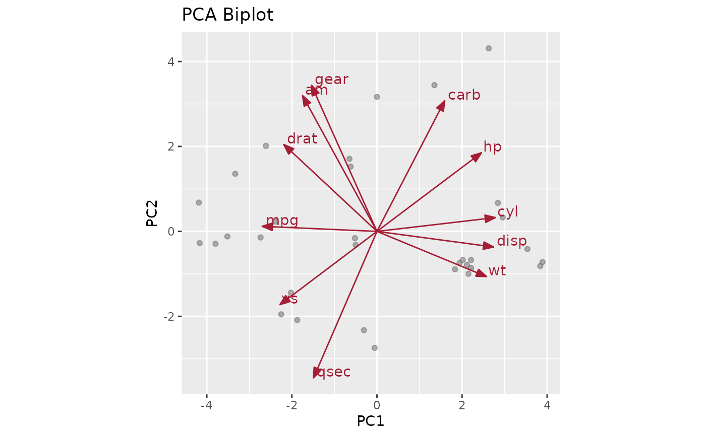

A classic PCA biplot: the observation scores (pca_model$x) as a
muted point cloud, overlaid with the variable loading vectors
(pca_model$rotation) drawn as labeled arrows from the origin.
Unlike plot_pca_bi, no separate newdata is required –
a fitted prcomp object already carries both the
scores and the loadings needed to draw the biplot.
Arguments
- pca_model
A
prcompobject.- x, y
Which principal components to plot on the x/y axes (default 1, 2).
Details
Loading vectors are unit-scale by construction and would be invisible next to the score cloud if plotted as-is, so they are rescaled so that their maximum extent is 80 standard biplot convention) before being drawn.
Examples
pca_model <- prcomp(mtcars, center = TRUE, scale. = TRUE)
pca_biplot(pca_model, x = 1, y = 2)
